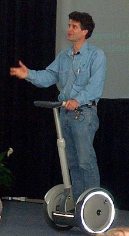

Dean L. Kamen (born April 5, 1951) is an American entrepreneur and inventor.
Born to a Jewish family in Long Island, New York, he attended Worcester Polytechnic Institute, but dropped out before graduating after five years of private advanced research for the drug infusion pump AutoSyringe.He is the son of Jack Kamen, an illustrator for Mad, Weird Science and other EC Comics publications.
Kamen is best known for inventing the product that eventually became known as the Segway PT, an electric, self-balancing human transporter with a computer-controlled gyroscopicstabilization and control system. The device is balanced on two parallel wheels and is controlled by moving body weight. The machine's development was the object of much speculation and hype after segments of a book quoting Steve Jobs and other notable IT visionaries espousing its society-revolutionizing potential were leaked in December 2001.
Kamen was already a successful and wealthy inventor, after inventing the first drug infusion pump and starting a company, AutoSyringe, to market and manufacture the pump. His company DEKA also holds patents for the technology used in portable dialysis machines, an insulin pump (based on the drug infusion pump technology) and an all-terrain electric wheelchair known as the iBOT, using many of the same gyroscopic balancing technologies that later made their way into the Segway.
Kamen has worked extensively on a project involving Stirling engine designs, attempting to create two machines; one that would generate power, and the Slingshot that would serve as a water purification system He hopes the project will help improve living standards in developing countries.Kamen has a patent issued on his water purifier, U.S. Patent 7,340,879, and other patents pending. In 2014, the film SlingShot was released, detailing Kamen's quest to use his vapor compression distiller to fix the world's water crisis.
Kamen is also the co-inventor of a compressed air device that would launch a human into the air in order to quickly launch SWAT teams or other emergency workers to the roofs of tall, inaccessible buildings.
In 2009 Kamen claimed his company DEKA was now working on solar power inventions.
Kamen and DEKA also developed the DEKA Arm System or "Luke", a prosthetic arm replacement that offers its user much more fine motor control than traditional prosthetic limbs. It was approved for use by the U.S. Food and Drug Administration (FDA) in May 2014, and DEKA is looking for partners to mass-produce the prosthesis.
In 1989, Kamen founded FIRST (For Inspiration and Recognition of Science and Technology), a program for students to get people interested in science, technology, and engineering. One competition started and run by FIRST is the FRC or FIRST Robotics Competition. In 2011, it held 55 regional competitions around the globe, and one international competition in St. Louis, Missouri.
FIRST has many robotic programs, including the FLL JR. (FIRST Lego League Jr.) and the FLL (FIRST Lego League) for younger students, and the FTC (FIRST Tech Challenge) and the FRC (FIRST Robotics Competition) for high school aged students.[15]
Kamen says that the FIRST competition is the invention he is most proud of, and predicts that the 1 million students who have taken part in the contests so far will be responsible for some significant technological advances in years to come.
During his career Kamen has won numerous awards. He was elected to the National Academy of Engineering in 1997 for his biomedical devices and for making engineering more popular among high school students. In 1999 he was awarded the 5th Annual Heinz Award in Technology, the Economy and Employment,and in 2000 received the National Medal of Technology from then President Clinton for inventions that have advanced medical care worldwide. In April 2002, Kamen was awarded the Lemelson-MIT Prize for inventors, for his invention of the Segway and of an infusion pump for diabetics. In 2003 his "Project Slingshot," a cheap portable water purification system, was named a runner-up for "coolest invention of 2003" by Time magazine.In 2005 he was inducted into the National Inventors Hall of Fame for his invention of the AutoSyringe. In 2006 Kamen was awarded the "Global Humanitarian Action Award" by the United Nations. In 2007 he received the ASME Medal, the highest award from the American Society of Mechanical Engineers,in 2008 he was the recipient of the IRI Achievement Award from the Industrial Research Institute,and in 2011 Kamen was awarded the Benjamin Franklin Medal in Mechanical Engineering of the Franklin Institute.
Kamen received an honorary "Doctor of Engineering" degree from Rensselaer Polytechnic Institute May 17, 1996, a "Doctor of Engineering" degree from Kettering University in 2001, an honorary "Doctor of Science" degree from Clarkson University on May 13, 2001, an honorary "Doctor of Science" degree from the University of Arizona on May 16, 2009, and an honorary doctorate from the Wentworth Institute of Technology when he spoke at the college's centennial celebration in 2004, and other honorary doctorates from North Carolina State University in 2005, Bates College in 2007, the Georgia Institute of Technology in 2008, the Illinois Institute of Technology in 2008 and Plymouth State University in May 2008. In 2015, Kamen received an honorary "Doctor of Engineering and Technology" degree from Yale University.
Kamen received the prestigious Stevens Honor Award on November 6, 2009, given by the Stevens Institute of Technology and the Stevens Alumni Association. On November 14, 2013, he received the James C. Morgan Global Humanitarian Award.
His residence is a hexagonal, shed style mansion he dubbed Westwind, located in Bedford, New Hampshire, just outside Manchester. The house has at least four different levels and is very eclectically conceived, with such things as hallways resembling mine shafts, 1960s novelty furniture, a collection of vintage wheelchairs, spiral staircases and at least one secret passage, an observation tower, a fully equipped machine shop, and a huge cast-iron steam engine which once belonged to Henry Ford built into the center atrium of the house (which is actually small in comparison), which Kamen is working to convert into a Stirling engine-powered kinetic sculpture. Kamen owns and pilots an Embraer Phenom 300 light jet aircraft and three Enstrom helicopters, including a 280FX, a 480, and a 480B.He regularly commutes to work via his helicopters and had a hangar built into his house. In 2016 he piloted a B-2 Spirit bomber at Whiteman AFB, marking the opening of the 2016 FRC World Championship in St. Louis.
He is the main subject of Code Name Ginger: the Story Behind Segway and Dean Kamen's Quest to Invent a New World, a nonfiction narrative book by journalist Steve Kemper published by Harvard Business School Press in 2003 (released in paperback as Reinventing the Wheel).
His company, DEKA, annually creates intricate mechanical presents for him. The company has created a robotic chess player, which is a mechanical arm attached to a chess board, and a vintage-looking computer with antique wood, and a converted typewriter as a keyboard. In addition, DEKA has received funding from DARPA to work on a brain-controlled prosthetic limb called the Luke Arm.
Kamen is a member of the USA Science and Engineering Festival's Advisory Board.
Dean of Invention, a TV show on Planet Green starring Kamen and correspondent Joanne Colan, in which they investigate new technologies, premiered on October 22, 2010.